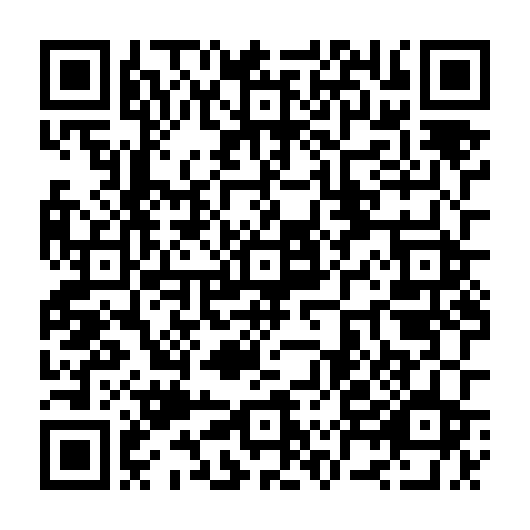
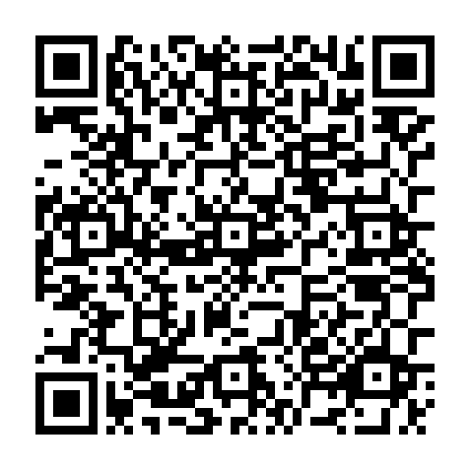

Open this page on another screen and scan a code with “산 로또 QR 찍고 당첨 확인” (Scan ticket QR) in the app. These codes use the same text format printed on Korean Lotto 6/45 paper tickets. They are samples only and are not real tickets.


The app has no purchase, payment, or betting features. All data stays on the device.